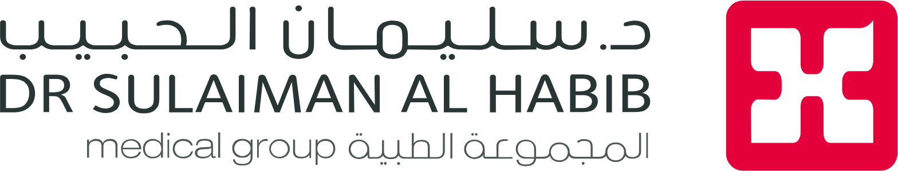

Your answers and participation will improve triage quality, patient flow, and patient experience at HMG Takhassusi Hospital Emergency Department.
إجاباتك ومشاركتك ستُحسّن جودة الفرز وتدفق المرضى وتجربة المريض في قسم الطوارئ بمستشفى التخصصي HMG.